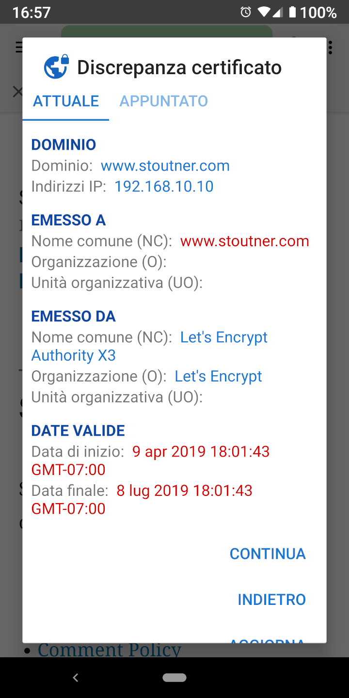
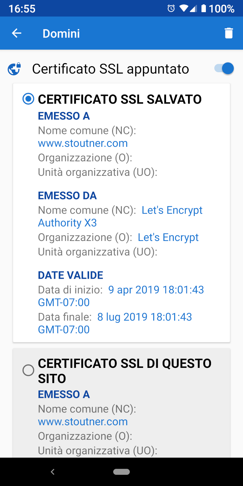

Connettiti in sicurezza Connettiti in sicurezza
Connettiti in sicurezza Connettiti in sicurezzaQuando si accede ad una URL criptata (quelle che iniziano con HTTPS), il server web utilizza un certificato SSL con lo scopo di criptare le informazioni inviate al browser e di identificare il server stesso. Lo scopo di questa identificazione è quello di impedire che una macchina situata tra il browser e il server web tenti di decriptare le informazioni in transito. Questo tipo di attacco è conosciuto come attacco “Man In The Middle (MITM)”. I certificati SSL sono generati dalle autorità di certificazione: sono aziende che verificano l'identità dei server e producono il certificato (a pagamento). Android ha una lista di autorità di certificazione fidate, e pertanto accetterà qualsiasi loro certificato fornito dai siti web. Non dovrebbe essere possibile che una organizzazione qualsiasi possa acquisire un certificato SSL per un dominio che non sia sotto il proprio controllo, ma in pratica alcuni governi e grosse multinazionali sono in grado di farlo.
Lo scopo di appuntare un certificato SSL è quello di dire al browser che solo un determinato certificato SSL è fidato per un particolare dominio. Qualsiasi altro certificato, per quanto valido, sarà rifiutato.

I certificati SSL scadono in corrispondenza di una data specifica, così anche i certificati che sono stati appuntati dovranno essere aggiornati regolarmente. Come regola generale, nella maggioranza dei casi, appuntare un certificato SSL non dovrebbe essere necessario. Per coloro che sospettano però di essere sorvegliati da qualche organizzazione, appuntare il certificato SSL può permettere di scoprire e sventare un attacco "MITM". Privacy Browser permette anche di appuntare gli indirizzi IP.

I certificati SSL possono essere appuntati nelle impostazioni dei domini. Oltre a proteggere dagli attacchi “MITM”, appuntare un certificato auto-firmato per un dispositivo come un router wireless o un access point eliminerà il messaggio di errore che si presenta ogni volta che viene caricato un sito web. Il tocco della scheda attiva mostra il certificato SSL attuale del sito.